Café con leche y medialunas
Café con leche, dos medialunas de manteca
$4.200
Granos de origen, tostados en casa, preparados por baristas que saben lo que hacen. Un lugar donde detenerse vale la pena.
EncontranosCuentan que todo empezó en 2024, cuando encontramos una tostadora italiana abandonada en un galpón y decidimos darle una segunda vida. Lo que iba a ser un experimento de fin de semana se convirtió en Café Origen: un rincón donde el aroma del grano recién tostado se mezcla con el murmullo de las charlas de sobremesa. Desde entonces, cada taza sigue guardando un poco de esa curiosidad inicial.
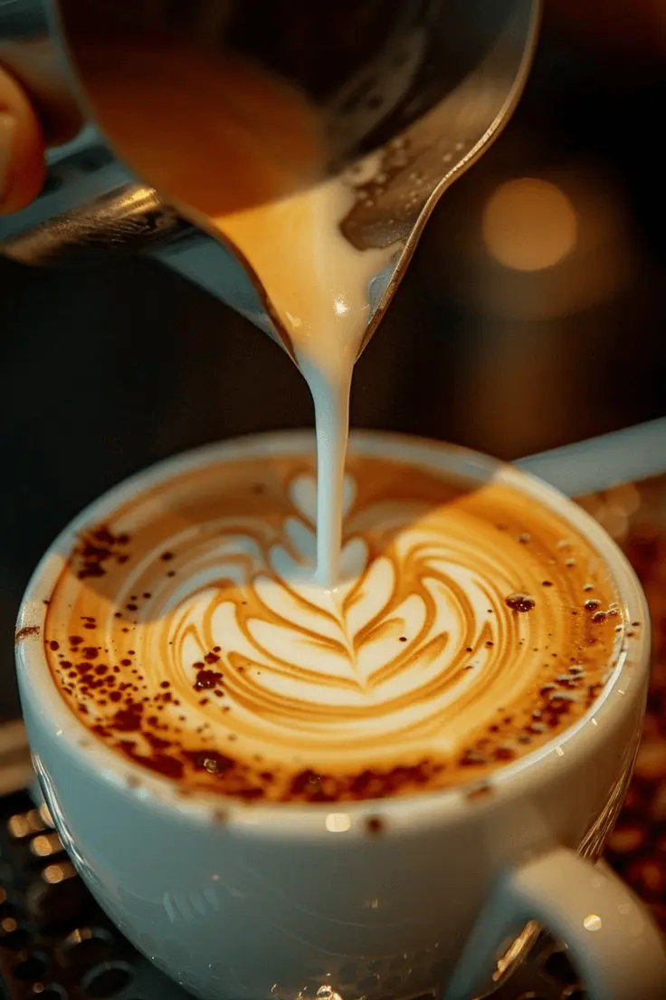
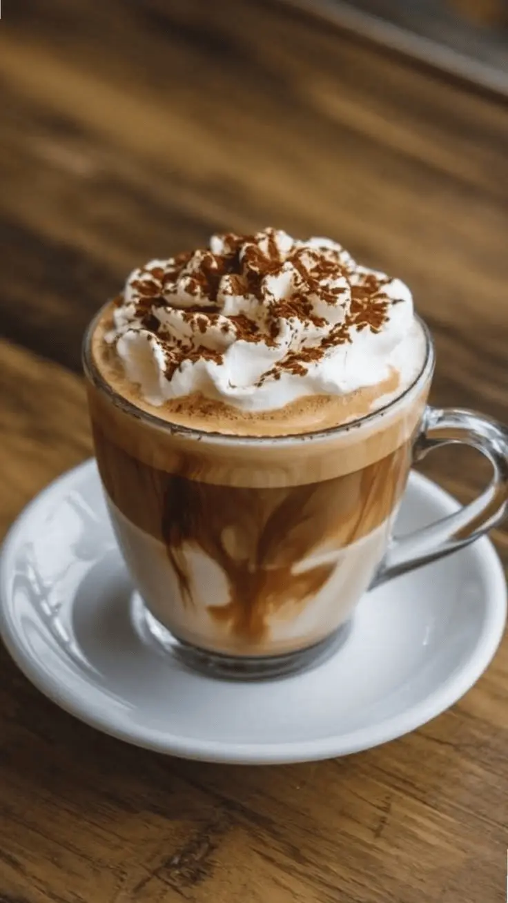
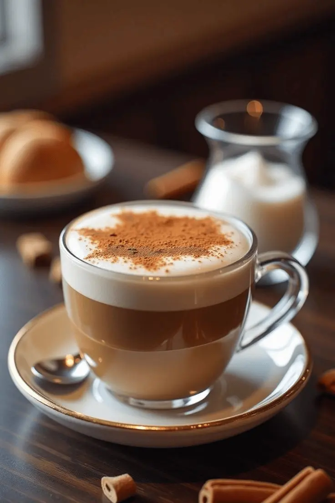
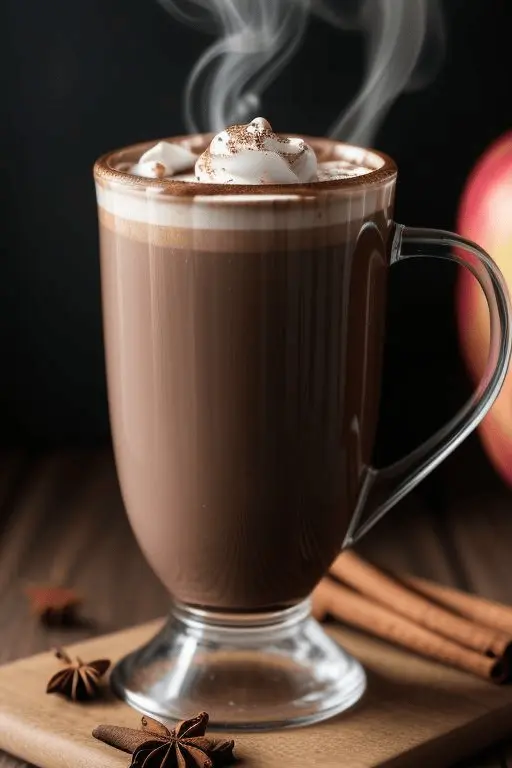
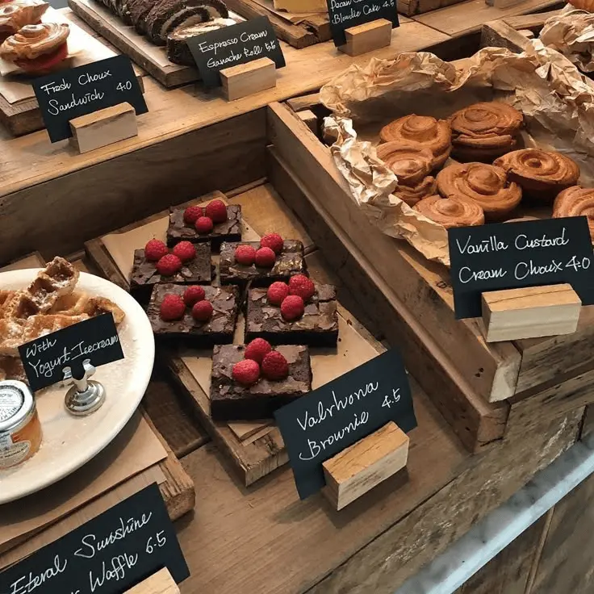
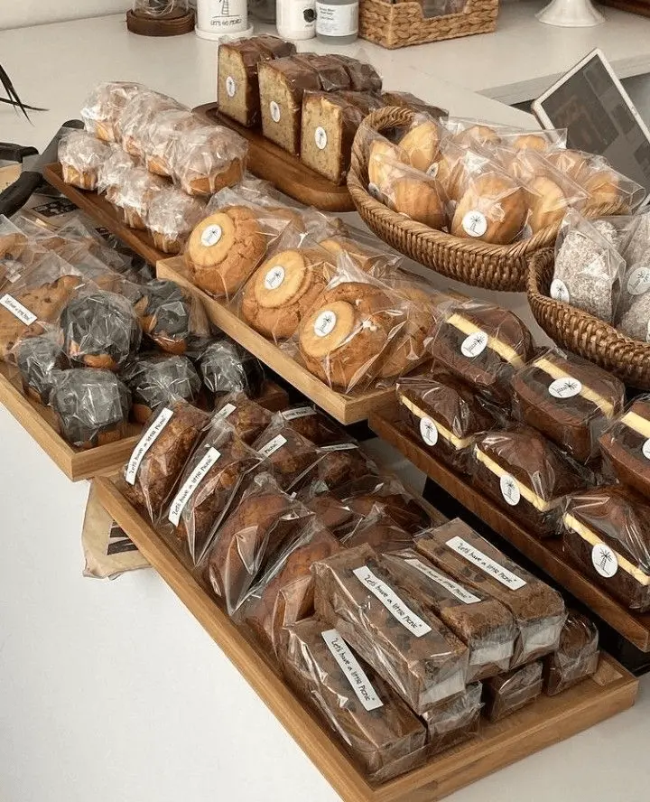
Café de especialidad, cocina de estación y combinaciones hechas para disfrutarlas sin apuro.
Café con leche, dos medialunas de manteca
$4.200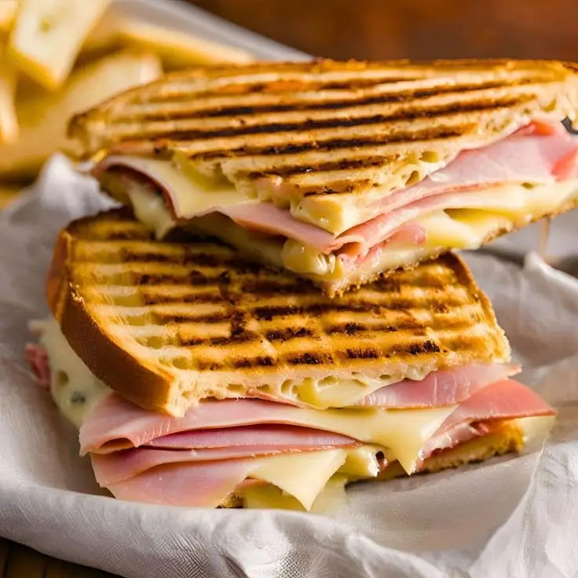
Pan de campo, jamón cocido, queso tybo
$5.300
Yogur natural, granola casera, frutos rojos
$4.800
Milanesa de ternera, lechuga, tomate, mayonesa casera, pan de campo
$7.200
Pollo grillado, lechuga, parmesano, crutones, aderezo césar
$6.800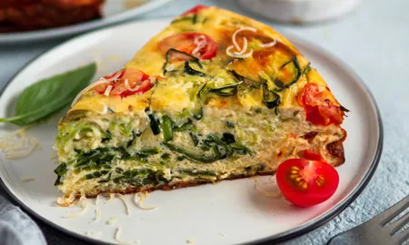
Tarta de acelga y ricota, ensalada mixta
$6.300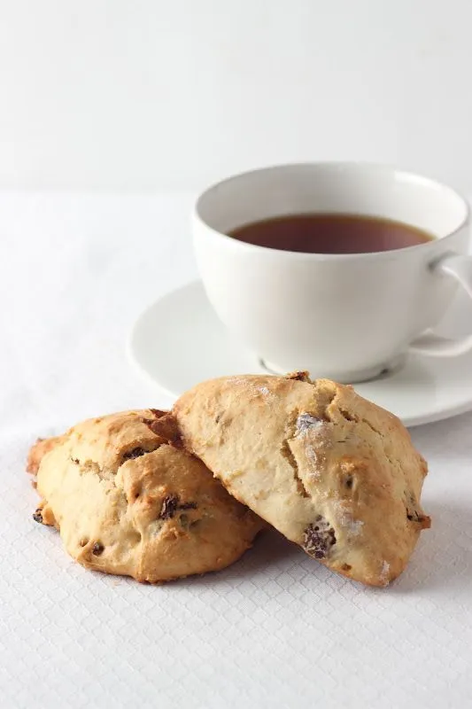
Té a elección, scones caseros con mermelada y crema
$4.500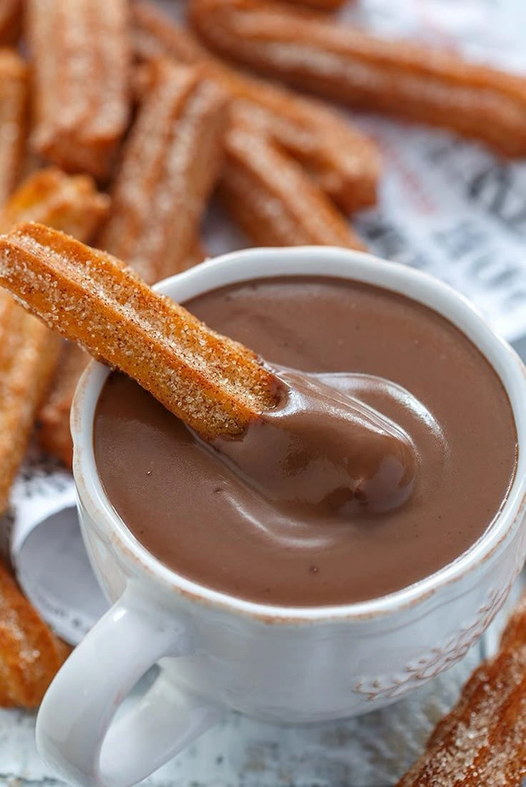
Chocolate caliente, tres churros rellenos
$5.100
Café a elección, porción de budín de limón
$4.600
Quesos, fiambres, pan casero, aceitunas
$9.500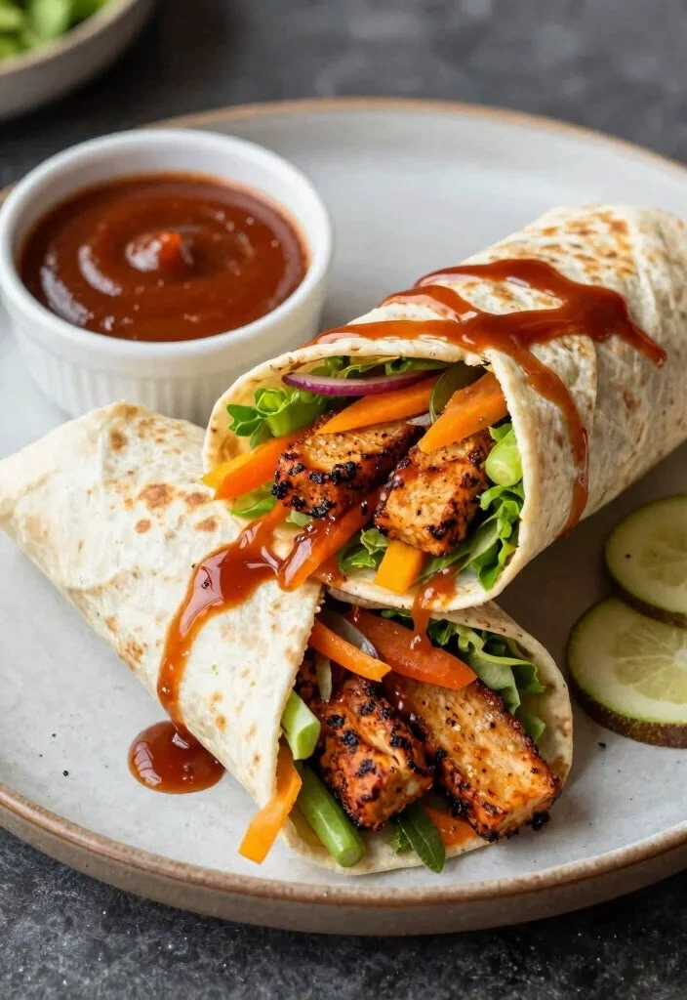
Wrap integral, vegetales grillados, hummus
$6.900
Sopa cremosa de calabaza, pan casero
$5.800Café con leche + 2 medialunas
$5.800Té o café + scone + jugo
$6.200El café con leche mejor que tomé en Córdoba, y las medialunas recién horneadas. Vuelvo seguro.
El tostado de jamón y queso es una locura, lo pido siempre que paso.
Rico todo, un poco caro para la zona pero vale la pena una vez al mes.
Ambiente hermoso para trabajar de mañana, wifi rápido y el capuchino es un golazo.
Encontré mi cafetería de cabecera. El chocolate caliente con churros es otro nivel.
Fui por curiosidad y terminé quedándome dos horas leyendo con un café con leche.
Buenísima la atención, aunque un sábado a la tarde estaba bastante lleno.
La tarta de verdura estaba espectacular, y el lugar es muy fotogénico.
El mejor lugar para la merienda con amigas, los scones son caseros de verdad.
Buena onda del personal, la carta podría tener más opciones sin gluten.
Vine por el chip NFC de la mesa y terminé sacando fotos para mi Instagram, hermoso lugar.
El wrap de vegetales grillados es mi almuerzo favorito de la semana.
Atención diez, café diez, precio justo. Recomendadísimo.
Buenísimo para desayunar antes del laburo, aunque a veces tarda un poco en hora pico.
La combinación de café de especialidad con el trato cálido lo hace único en el barrio.
Calle Falsa 123
Barrio Centro
Córdoba, Córdoba
Lunes a viernes · 8:00 – 20:00
Sábados · 9:00 – 21:00
Domingos · 9:00 – 14:00
hola@cafeorigen.com
+54 380 400 0000
@cafeorigen en Instagram